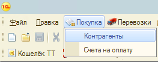
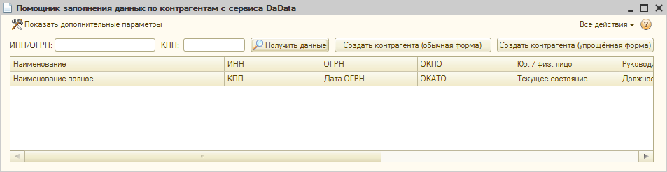
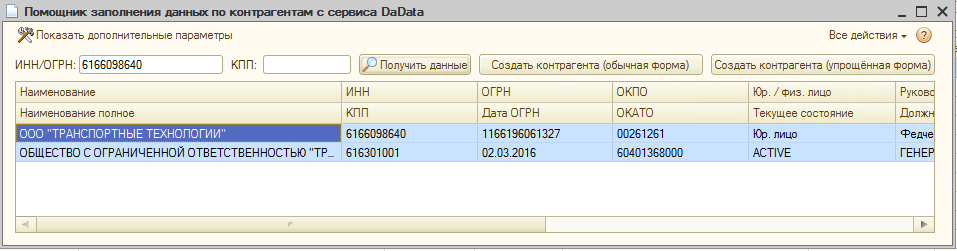
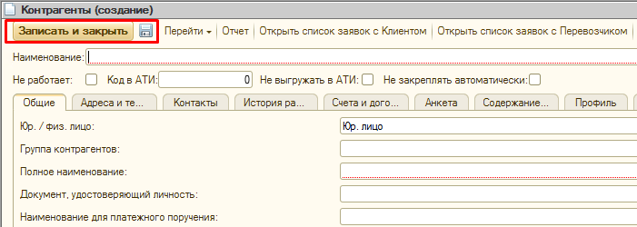

Текст начинается здесь...
Главный заголовок статьи
Создание карточки Контрагента (КА)
Алгоритм действий: Ниже описан пошаговый процесс заведения нового
контрагента-перевозчика в
базу.
- Открой 1С и перейди во вкладку «Покупка» ➔ «Контрагенты».

- Проверь наличие КА в действующей базе. Введи его ИНН в строку "Поиск по ИНН" окна
"Контрагенты" и нажми Enter
 Внимание: Если КА уже есть в базе — новую карточку НЕ СОЗДАВАЙ! Просто открой её для дальнейшей работы или редактирования.
Внимание: Если КА уже есть в базе — новую карточку НЕ СОЗДАВАЙ! Просто открой её для дальнейшей работы или редактирования. - Если по ИНН никого не нашлось - для создания новой карточки нажми кнопку
«Создать». Откроется окно с пустой карточкой для заполнения.
Другой вариант: Кнопка "Создать с заполнением DaData" позволит провести автозаполнение карточки, взяв информацию из внешних источников. Для этого нужно ввести ИНН или ОГРН организации и нажать "Получить данные"

Выбрать из списка поиска нужную организацию и нажать "Создать контрагента(обычная форма)"
Откроется стандартная форма карточки КА, где некоторые поля уже заполнены. -
В карточке переходите на вкладки из списка ниже, заполняя их.
Выберите вкладку для просмотра правил заполнения: - Заполнив все вкладки, для завершения создания карточки нажми кнопку «Записать и
закрыть» или «Записать» (дискета).

Создание договора и проверка КА в ОЭБ
Старт процесса: Все действия начинаются из карточки контрагента (КА), вкладка
«Общие».
1. Работа с договором
- На вкладке «Общие» проверяем действующие договоры, нажав на кнопку «Договоры контрагента».
- При наличии договора — открываем его для дальнейшего заполнения. ?
- В случае отсутствия (список будет пуст) — нажимаем кнопку «Создать договор контрагента». Откроется окно, в котором необходимо заполнить обязательные поля.
Работа с доверенными лицами (если контактирует не сам ИП/Директор):
- Во вкладке «Договор» в соответствующее поле прикрепите доверенность через кнопку «Добавить».
- Направьте доверенность на согласование в Юридический Отдел (ЮО), перейдя во вкладку «Вопросы и ответы».
2. Подготовка документов для проверки
Во вкладке «Документы» необходимо прикрепить сопроводительные документы для
проверки. Левая часть окна предназначена для Юридических лиц, правая — для ИП.
Поле «Транспорт» (СТС/ПТС) обязательно для всех контрагентов.
| Документы для Юридических лиц (ООО) | Документы для Физических лиц (ИП) |
|---|---|
| ИНН | ИНН |
| ОГРН | ОГРН |
| Приказ о вступлении в должность | Паспорт (паспорт создателя бизнеса) |
| Решение учредителей о назначении директора | Реквизиты / Анкета ИП |
| Устав (для проверки не обязательно) | — |
| Транспорт (СТС / ПТС) | Транспорт (СТС / ПТС) |
3. Отправка на проверку
- Нажимаем кнопку «Уведомить ОЭБ о необходимости проверки».
- Откроется окно с выбором приоритета. Выберите нужный:
- B — проверить в течении дня (обычно выбираем этот приоритет)
- С — на перспективу, не срочно
Создание карточки водителя
Здесь будет алгоритм проверки опыта водителя и заведения его карточки (из листа КА_СоздатьВодитель).
Создание карточки тягача
Данные из листа СоздатьТягач.
Создание карточки прицепа
Данные из листа СоздатьПрицеп.
Создание транспорта
Связка тягача и прицепа в единую сцепку. Данные из листа ТранспортКА.